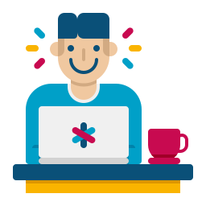

1. I love coding
I’ve loved programming ever since I did my first course years ago. There are always new things to learn, new problems to solve. Learning new programming languages is a joy; and most importantly the feeling one gets from finally getting something to work right is a thrill like few others. I like the challenge of coding the program so it works exactly like I envision it to work